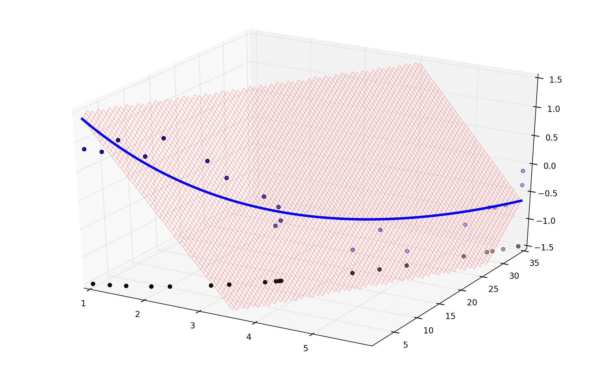

Aprendizagem Automática
2. Introduction to Supervised Learning
Ludwig Krippahl
Supervised Learning
Summary
- Supervised learning, basic concepts
- Regression and classification
- Fitting curves with Least Mean Squares
Supervised Learning
Basic concepts
Supervised Learning
Basic idea
- We have a set of labelled data
- We assume there is some function
- The goal of
Supervised Learning is to find (from the examples) - such that
g(θ,X) approximatesF(X) Supervised because we can compareg(θ,X) toY
Supervised Learning
Training (Supervised learning)
- Ideally, we want to approximate
F(X):X→Y for allX - But, for now, we'll consider only our Training Set
- Training Set
- The data we use to adjust the parameters
θ in our model. - More generally: data used to choose a hypothesis
- Training Error or Empirical Error
- The error on the training set for each instance of
θ . - (Sample Error in Mitchell 1997)
Supervised Learning
Our ML problem for today:
- Goal: Predict the
Y values in our training set - Performance: minimise training error
- Data:
{(x1,y1),...,(xn,yn)}
Classification and Regression
- In Classification
Y is discrete. - Examples: SPAM detection, predict if mushrooms are poisonous
- Find function to split data in differente sets
- In Regression
Y is continuous. - Examples: predicting trends, prices, purchase probabilities
- Find function that approximates
Y
Supervised Learning
Regression
Regression
Regression example
- Polynomial fitting: a simple example of linear regression.
- Example: we have a set of
(x,y) points and want to fit the best line:y=θ1x+θ2 - How to find the best line?
Regression
- How to find the best line?
Regression
Finding the best line
- Assume
y is a function ofx plus some error:y=F(x)+ϵ - We want to approximate
F(x) with someg(x,θ) . - Assuming
ϵ∼N(0,σ2) andg(x,θ)∼F(x) , then: - Given
X={xt,yt}Nt=1 and - knowing that
p(x,y)=p(y|x)p(x)
Regression
Finding the best line
- The probability of
(X,Y) given someg(x,θ) is the - likelihood of parameters
θ :
Likelihood
- Data points
(x,y) are randomly sampled from all possible values. - But
θ is not a random variable. - Find the
θ that, if true, would make the data is most probable - In other words, find the
θ ofmaximum likelihood
Regression
Maximum likelihood
- First, take the logarithm (same maximum)
L(θ|X)=log(∏t=1np(yt|xt)×∏t=1np(xt)) - We ignore
p(X) , since it's independent ofθ - Replace the expression for the normal:
Regression
Maximum likelihood
- Replace the expression for the normal:
- Simplify:
Regression
Maximum likelihood
Under our assumptions:
- Max(likelihood) = Min(squared error):
- Note: the squared error is often written
- (but this is just for convenience in computing the derivative)
Supervised Learning
Least Mean Squares Minimization
LMS
How to find the best line?
LMS
How to find the best line?
- We find the parameters for
- that minimize the squared error
- Let's visualise this surface wrt
θ
LMS
LMS
LMS
LMS
- This allows us to find the best
θ1,θ2 (not a very good model...)
Supervised Learning
Curves
Curves
Linear Regression
- How to fit curves with something straight?
- We can change the data:
-
X2={xt1,xt2,yt} , wherex1=x2 andx2=x - Using a nonlinear transformation we project the data into a curved surface
Curves
Curves
Linear Regression
- Now we fit our new data set
- With the (linear) model in three dimensions
Curves
Curves
- Then we project it back using
x1=x2 andx2=x

Curves
Curves
Linear Regression
- This is the equivalent of fitting a second degree polynomial
import numpy as np
import matplotlib.pyplot as plt
mat = np.loadtxt('polydata.csv',delimiter=';')
x,y = (mat[:,0], mat[:,1])
coefs = np.polyfit(x,y,2)
pxs = np.linspace(0,max(x),100)
poly = np.polyval(coefs,pxs)
plt.figure(1, figsize=(12, 8), frameon=False)
plt.plot(x,y,'or')
plt.plot(pxs,poly,'-')
plt.axis([0,max(x),-1.5,1.5])
plt.title('Degree: 2')
plt.savefig('testplot.png')
plt.close()Curves
Curves
Linear Regression
- How to fit curves with something straight?
- Important idea:
- Add dimensions with nonlinear transformations
- Use something straight in this higher dimension space
Assumption (Inductive Bias)
- We can adjust the data with a straight line
Hypothesis Classes
- Straight lines, but in higher dimensions
Supervised Learning
Curve More!
Curve more
- Improving the fit with higher polynomials, degree 3
Curve more
- Improving the fit with higher polynomials, degree 5
Curve more
- Improving the fit with higher polynomials, degree 15

Curve more
Improving the fit?
- Degree 15 is probably not a good idea...
Curve more
Improving the fit?
- Degree 15 is probably not a good idea...
Overfitting
- The hypothesis adjusts too much to the data
- Training error is small, but increases error outside
- How can we prevent getting carried away?
- Next lecture: overfitting
Supervised Learning
Summary
2. Supervised Learning
Summary
- Supervised learning: Classification and Regression
- Linear regression: maximum likelihood and least mean squares
- Polynomial regression is linear regression
- (nonlinear transformation to higher dimensions)
- Nonlinear expansion can be too much of a good thing
Further reading
- Bishop, Chapter 1
- Alpaydin, Section 2.6
- Marsland, Sections 1.4 and 2.4
Aprendizagem Automática
2. Introduction to Supervised Learning
Ludwig Krippahl